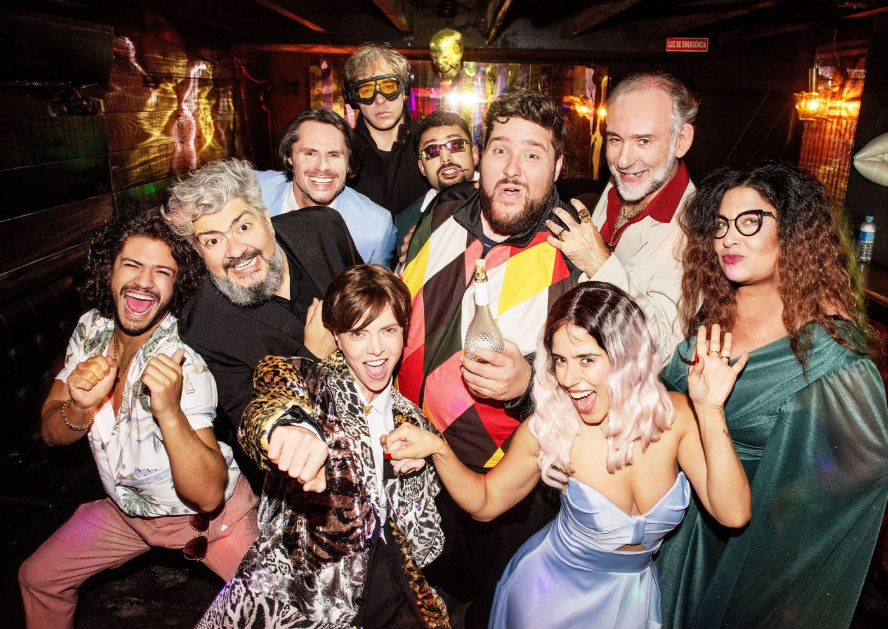

Dois Patrões: versão brasileira atualiza o clássico que revolucionou a história da comédia

Dirigido por Neyde Veneziano e Giovani Tozi, espetáculo estreia em janeiro de 2026 no Teatro Itália com adaptação ambientada no Brasil contemporâneo
Um dos textos mais emblemáticos da história da comédia ganha uma nova leitura nos palcos brasileiros. Dois Patrões, versão atualizada de Il servitore di due padroni, de Carlo Goldoni, estreia no dia 16 de janeiro de 2026, no Teatro Itália, em São Paulo. A montagem tem tradução de Neyde Veneziano, adaptação de Giovani Tozi e direção assinada pelos dois artistas, que conduzem o espetáculo a quatro mãos.
Com 10 artistas em cena, a nova versão preserva o enredo central e os arquétipos clássicos da commedia dell’arte — como Arlequim, Pantaleão e Doutor —, mas desloca a ação para uma atmosfera urbana, brasileira e contemporânea, ambientada em 2025, durante uma festa de noivado organizada por um poderoso bicheiro.
Um reencontro artístico após duas décadas
O projeto marca também um reencontro simbólico. Em 2006, Neyde Veneziano dirigia Arlequim e Seus Dois Patrões quando conheceu Giovani Tozi, então bailarino e estudante de teatro, em seu primeiro teste profissional. Vinte anos depois, os dois retornam ao texto que os aproximou, agora dividindo a direção e propondo uma leitura renovada do clássico.
“A adaptação do Giovani ficou genial”, destaca Neyde. “Com um texto extenso, elenco numeroso e muitas cenas, a direção compartilhada permitiu aproveitar melhor o tempo de ensaio e aprofundar a construção dos personagens.”
Na divisão criativa, Neyde Veneziano se dedica à ambientação cênica e à composição física das personagens, enquanto Giovani Tozi concentra-se nos aquecimentos, leituras e no trabalho de intenções e ritmo da cena.
Jogo do bicho, redes sociais e uma festa que nunca acaba
O ponto de partida da adaptação está no conceito das máscaras da commedia dell’arte, reinterpretadas a partir de símbolos profundamente brasileiros. “As máscaras carregam instinto, energia e função social. Essa lógica nos levou ao jogo do bicho, um universo popular, simbólico e extremamente teatral”, explica Tozi.
Na trama, Pantaleão se transforma em um bicheiro que planeja o casamento da filha para garantir poder e lucro na divisão de territórios. O Doutor continua advogado, agora a serviço dos bicheiros. Tudo acontece dentro de uma festa de noivado interminável, onde ninguém parece disposto a encerrar a celebração — um ambiente que mistura o absurdo de O Anjo Exterminador, de Buñuel, com a lógica caótica e sedutora do Brasil contemporâneo.
Personagens clássicos em chave atual
O Arlequim de Goldoni surge como Tico Sorriso (Felipe Hintze), um carnavalesco de escola de samba de quarta divisão que, como PJ, acumula empregos para sobreviver. Esmeraldina (Mila Ribeiro) é assessora e social media de Clarice Lombardi (Camilla Camargo), jovem decidida a assumir os negócios da família após o casamento com Silvio Salvatti (Marcus Veríssimo), um playboy à sombra do pai, o influente Doutor Salvatti (Jonathas Joba).
A confusão cresce quando Beatriz Rasponi (Larissa Ferrara) surge disfarçada de seu irmão morto para recuperar dinheiro escondido com Pantaleão (Marcelo Lazzaratto). O sedutor Luca Aretusi (Gabriel Santana), marido de Beatriz, aparece como principal suspeito do crime, enquanto Briguela (Gabriel Ferrara), dono do Hotel Goldoni Palace, tenta manter a festa funcionando a qualquer custo.
A trilha sonora original e executada ao vivo por Nando Pradho, que também integra o elenco, dita o ritmo dessa celebração que se recusa a acabar.
Clássico reinventado para o presente
Escrita em 1745, Arlequim, Servidor de Dois Amos marcou uma revolução estética ao transformar a commedia dell’arte improvisada em comédia estruturada, sem perder o humor popular. Dois Patrões dialoga com esse legado ao reinventar o clássico dentro da realidade brasileira, com linguagem ágil, crítica social e ritmo acelerado.
O resultado é uma comédia vibrante, popular e contemporânea, que respeita a tradição e, ao mesmo tempo, reflete um Brasil contraditório, caótico e irresistivelmente cômico.
Serviço
Dois Patrões Teatro Itália📍 Av. Ipiranga, 344 – Centro – São Paulo
📅 Estreia: 16 de janeiro de 2026🗓
Temporada: de sexta a domingo, até 1º de março de 2026
⏰ Sextas e sábados, às 20h | Domingos, às 18h
🎟 Ingressos: R$ 100 (inteira) | R$ 80 (meia)⏱ Duração: —
🔞 Classificação: 12 anos